PHOTOGRAPHY · COMPOSITION · STORY
Through my lens.
I photograph the things that make me stop — a line, a moment, a texture, a machine, a place or simply the way light changes what I'm looking at.
Different subjects. Same instinct to notice.
01 — 11 / SELECTED FRAMES
No categories. Just things worth noticing.
A continuous edit of spaces, movement, nature, people and details — arranged by visual rhythm rather than subject.
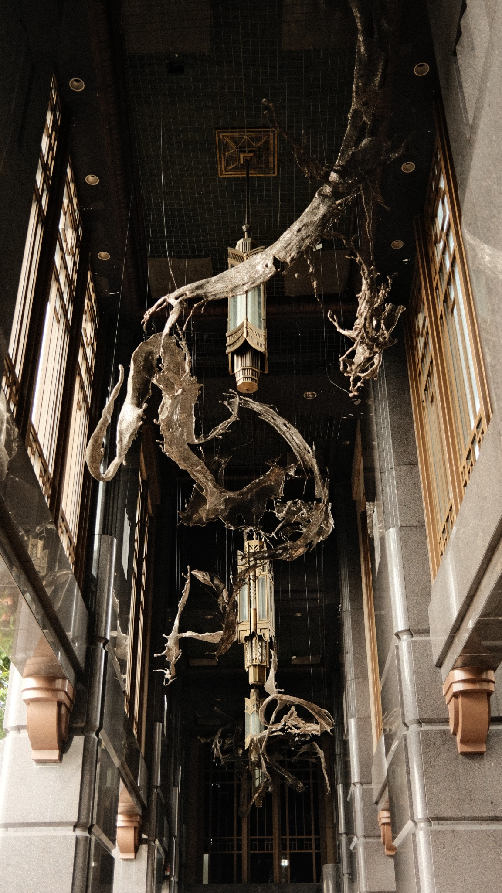
SOOC · FILM SIMULATION
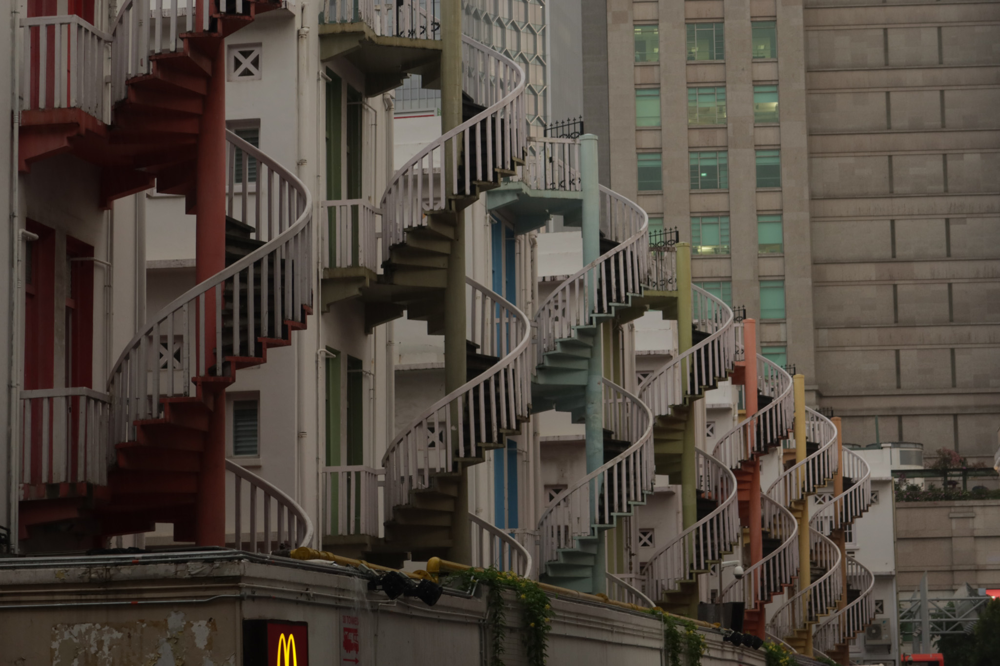
SIGMA 18–50MM F/2.8
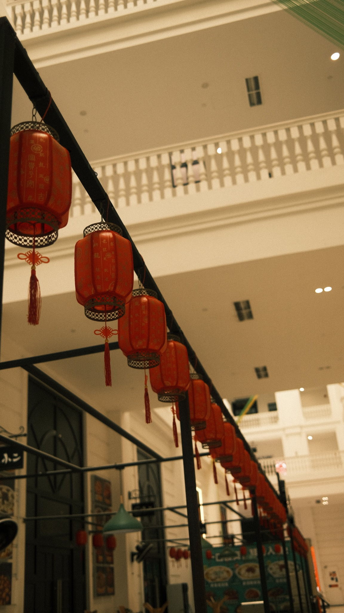
SOOC · FILM SIMULATION
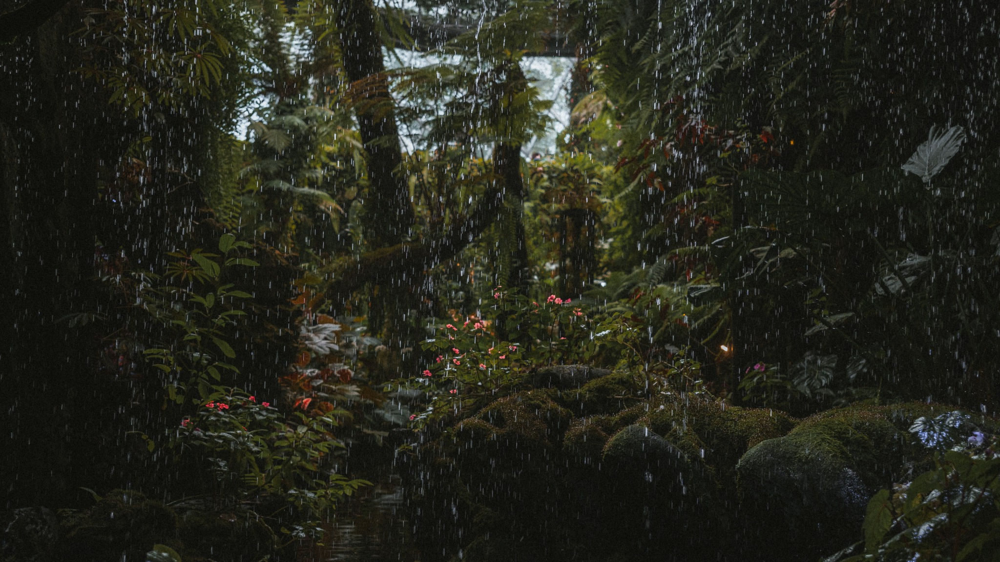
SIGMA 18–50MM F/2.8
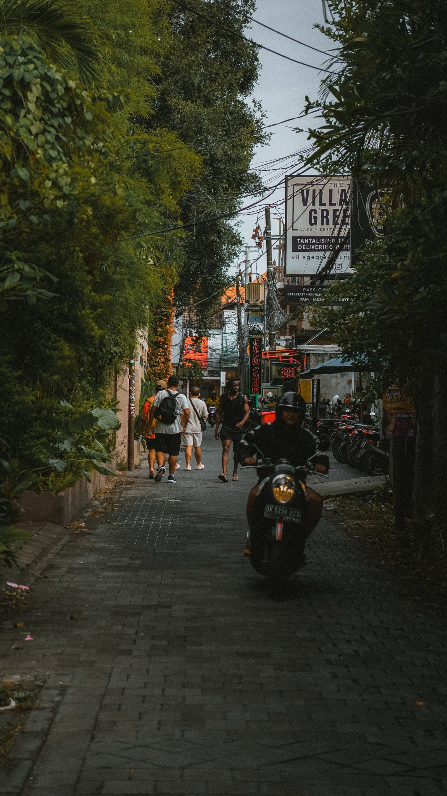
SIGMA 18–50MM F/2.8
EDIT / 01
The photograph doesn't always end at the shutter.
Colour correction, tonal refinement and image editing are part of how I shape the final frame when the image calls for it.
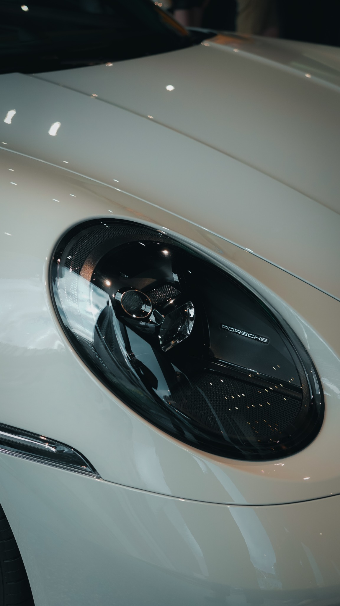
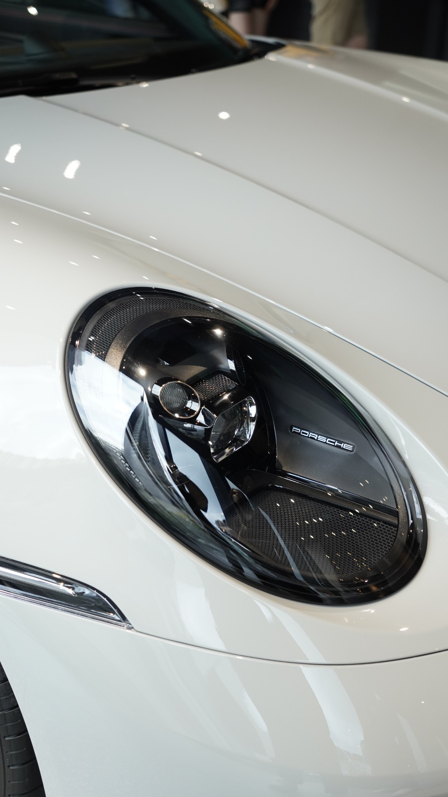
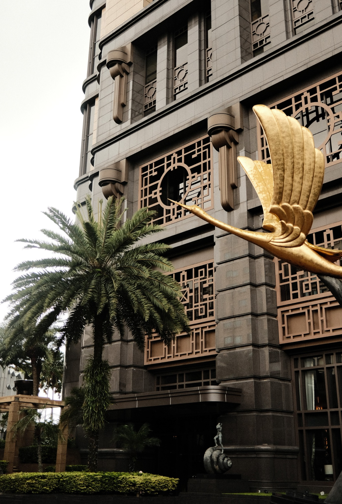
SOOC · FILM SIMULATION
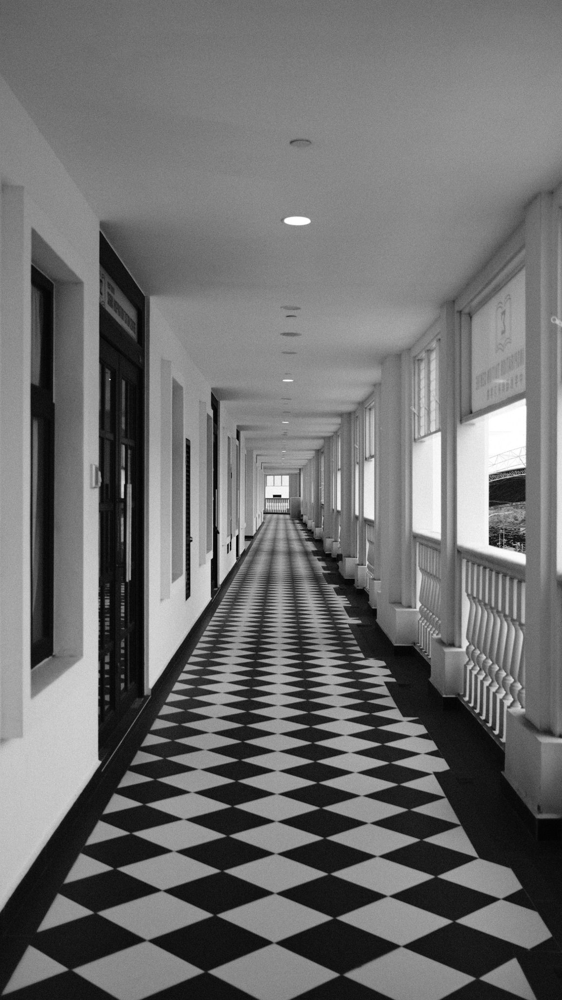
SOOC · FILM SIMULATION
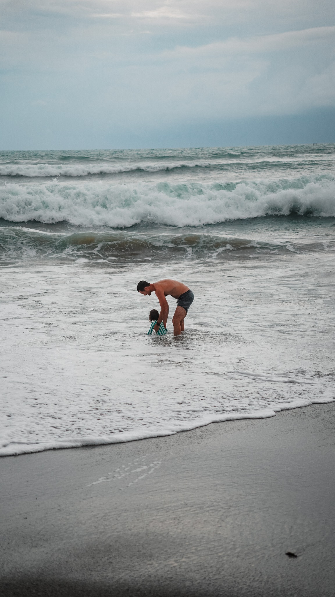
SIGMA 18–50MM F/2.8
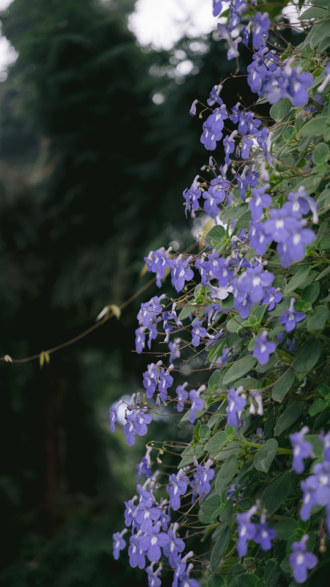
SIGMA 18–50MM F/2.8
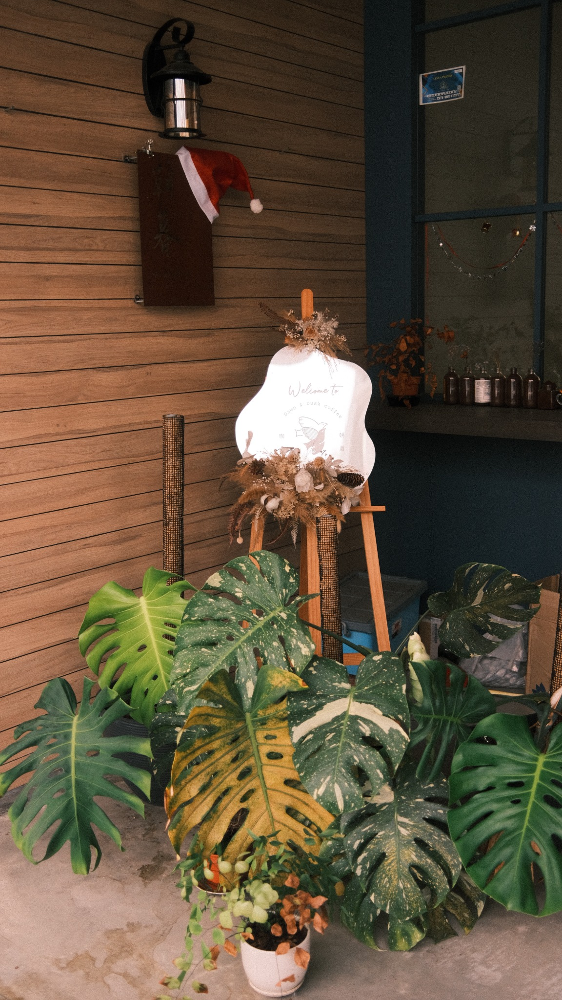
SOOC · FILM SIMULATION
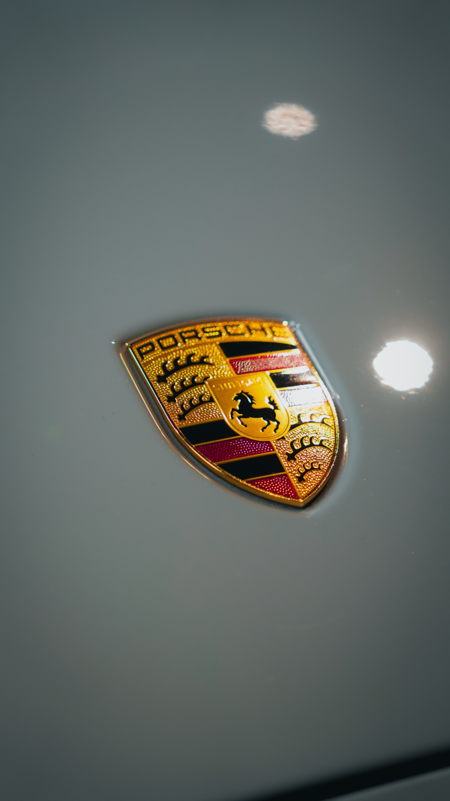
SIGMA 18–50MM F/2.8
THE ARCHIVE CONTINUES
More frames live at @starrstash ↗
More photography, experiments and everyday observations beyond the portfolio.